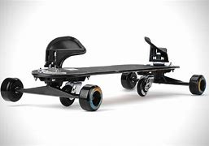

Los tipos de skates

El freeboard
skate freeboard: Estas tablas fueron diseñadas para simular el estilo del snowboarding en nieve, pero esta vez sobre el asfalto de las carreteras. Son monopatines de 6 ruedas generalmente (algunos tienen más ruedas, hay configuraciones de 8).
Son más largas, tiene acoples para los pies y dos ruedas extras que permiten giros de 360º permitiéndo algunas piruetas extraordinarias. Si eres un amante del snow, y no sabes qué hacer cuando no hay nieve por tu zona… (o simplemente no nieva nunca), éste es tu skate.